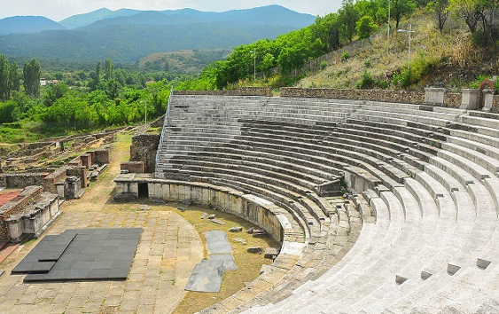
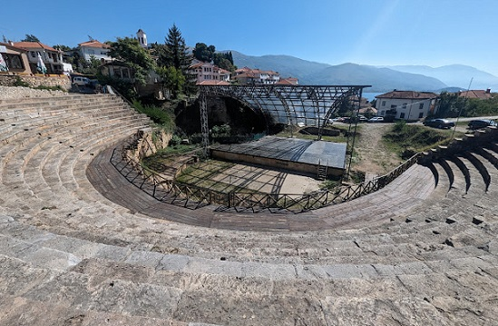

|
MACEDONIA
La República de Macedonia del
Norte se corresponde geográficamente aproximadamente al antiguo reino de
Peonia. A fines del siglo VI a.e.c., los persas aqueménidas de Darío el
Grande conquistaron a los peonianos, incorporando lo que hoy es el
territorio de Macedonia del Norte dentro de sus territorios. Los romanos establecieron la provincia de Macedonia en el 146 a.e.c. En la época de Diocleciano, la provincia había sido subdividida entre Macedonia Prima en el sur, que abarca la mayor parte del reino de Macedonia, y Macedonia Salutaris en el norte, que abarca parcialmente a Dardania y al conjunto de Paeonia; la mayor parte de las fronteras modernas del país se encontraban dentro de este último, con la ciudad de Stobi como su capital. La expansión romana trajo el área de Scupi bajo el dominio romano en la época de Domiciano, y se unió a la provincia de Moesia.
De época romana destacamos: - El área arqueológica de Heraclea Lyncestis en Bitola con el foro, murallas, teatro romano del siglo II y las basílicas de época bizantina. Fue descubierta justo antes de la segunda guerra mundial. Fundada por Filipo II de Macedonia a mitad del siglo IV a.e.c., si bien la mayoría de los restos que hoy se conservan son de época romana o paleocristianos. Foto: ganasdemundo.com
 - El área arqueológica de Vardar Hill se localiza en Gevgelija. Poblado desde la Edad de Bronce. - En Ohrid destacamos el teatro greco-romano del siglo II a.e.c., su área arqueológica y el museo arqueológico. En época romana fue un importante punto de la Via Egnatia, que unía Dyrrachium (Dürres – Albania) con Byzantium (Estambul – Turquía). En el 518 la ciudad fue destruida por un terremoto. Foto: Laura G
 - El yacimiento arqueológico de Stobi es considerado como el yacimiento más importante de Macedonia. De época romana destacan las murallas, el teatro, las dos basílicas, las termas y residencias como la Domus Fulonica, la Casa de Peristeria, el palacio de Teodosio ...Más info: Yacimiento romano de Stobi
|